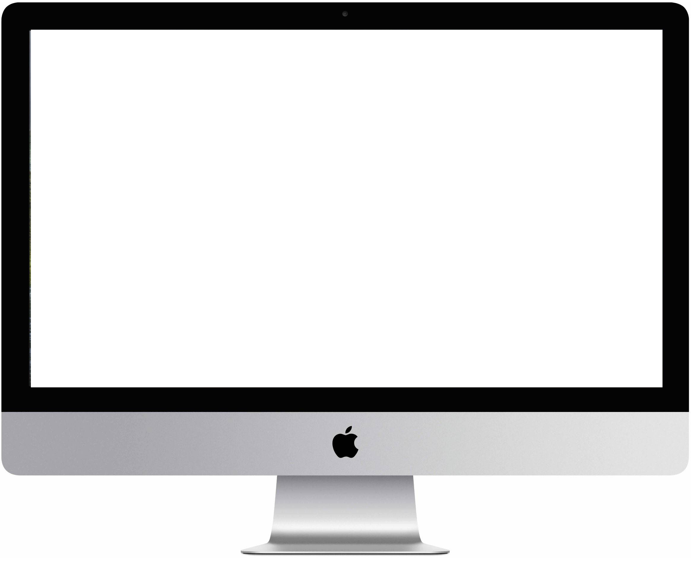

{{item.name}}
*
{{item.description}}
{{item.name}}
*
{{item.description}}
{{item.name}}
*
{{item.description}}
系统修复
{{btnLoading.repair.bol?btnLoading.repair.text:btnLoading.repair.htext}}
此动作将清空你的所有本地持久化有生数据, 之后重建数据结构. 请谨慎操作!
缓存
{{btnLoading.clearCache.bol?btnLoading.clearCache.text:btnLoading.clearCache.htext}}
本地缓存清空后的首次运行可能比较缓慢
更新和重启
{{btnLoading.checkUpdate.bol?btnLoading.checkUpdate.text:btnLoading.checkUpdate.htext}}
{{btnLoading.openUpdatelog.bol?btnLoading.openUpdatelog.text:btnLoading.openUpdatelog.htext}}
{{btnLoading.reboot.bol?btnLoading.reboot.text:btnLoading.reboot.htext}}
官方网站
前往官网
关于
关于 ideawall

桌面源入场动画
入场动画可以实时预览变更效果
弹跳入场
淡定入场
旋转入场
滚动入场
向下弹入
从左弹入
从右弹入
向上弹入
向下淡入
从左淡入
从右淡入
向上淡入
左上旋入
右上旋入
左下旋入
右下旋入
向下滑入
从左滑入
从右滑入
光速入场
水平翻入
垂直翻入
随机入场
桌面源离场动画
离场动画仅在设备桌面发生
[关键性的同步动作]
时才会触发.
弹跳离场
淡定离场
旋转离场
滚动离场
向下弹出
从左弹出
从右弹出
向上弹出
向下淡出
从左淡出
从右淡出
向上淡出
左上旋出
右上旋出
左下旋出
右下旋出
向上滑出
从左滑出
从右滑出
光速出场
水平翻出
垂直翻出
垂死挣扎
随机离场